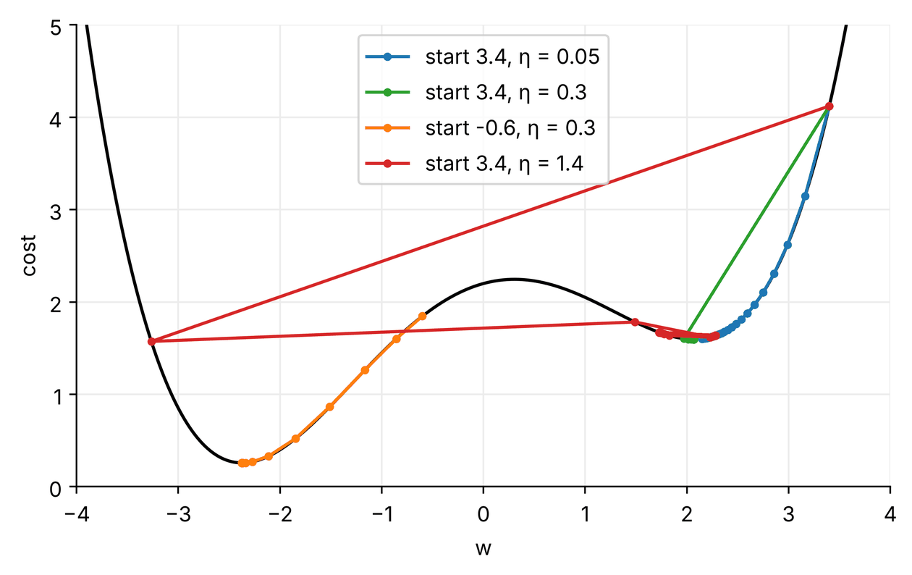
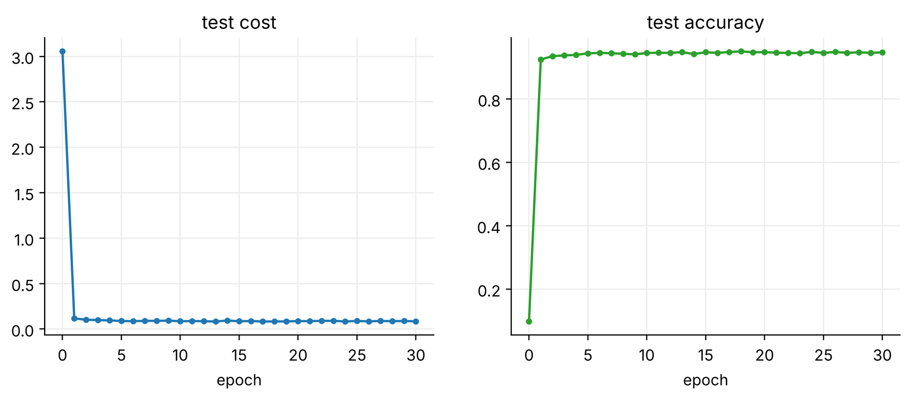
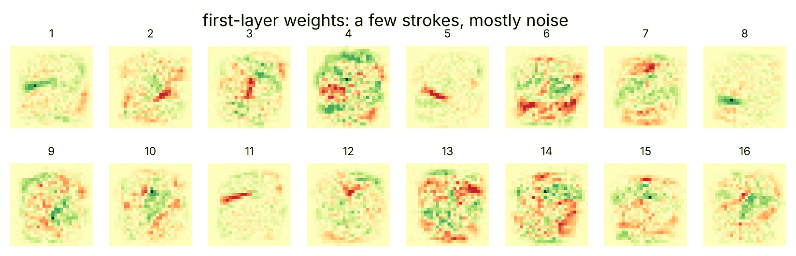
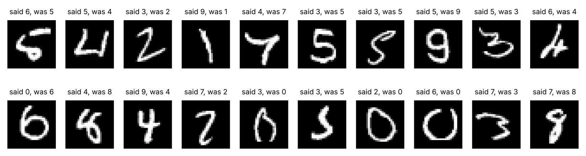

Practice · Training in Python
Gradient descent and backpropagation, line by line.
A complete, runnable notebook for chapters 4–6. Roll a ball down a cost curve, write backpropagation by hand, check it numerically, train the 784 → 16 → 16 → 10 network on 60,000 digits to about 95% accuracy, and look at what it learned and where it fails. Only NumPy and Matplotlib. Hover over (or tap) any line of code to see what it does.
1 Hover over or tap any numbered line of code to highlight its explanation. Every output and chart below was produced by running this exact notebook.
1Setup and data
The same libraries and the same MNIST loader as in the first notebook.
- %config InlineBackend.figure_format = "retina"1
- import numpy as np2
- import matplotlib.pyplot as plt3
-
- plt.rcParams["figure.figsize"] = (7, 4)4
- plt.rcParams["axes.spines.top"] = False5
- plt.rcParams["axes.spines.right"] = False5
- plt.rcParams["axes.grid"] = True6
- plt.rcParams["grid.color"] = "#ececec"6
-
- import gzip, os, urllib.request7
-
- URL = "https://raw.githubusercontent.com/fgnt/mnist/master/"8
-
- def load(name, offset):9
- if not os.path.exists(name):10
- urllib.request.urlretrieve(URL + name, name)10
- with gzip.open(name) as f:11
- return np.frombuffer(f.read(), np.uint8, offset=offset)12
-
- X_train = load("train-images-idx3-ubyte.gz", 16).reshape(-1, 784) / 25513
- y_train = load("train-labels-idx1-ubyte.gz", 8)14
- X_test = load("t10k-images-idx3-ubyte.gz", 16).reshape(-1, 784) / 25515
- y_test = load("t10k-labels-idx1-ubyte.gz", 8)15
- print(X_train.shape, y_train.shape, X_test.shape, y_test.shape)16
(60000, 784) (60000,) (10000, 784) (10000,)
2Gradient descent on one weight
Pretend the cost depends on a single weight: $C(w) = 0.05w^4 - 0.5w^2 + 0.3w + 2.2$, with two valleys. Gradient descent repeats $w \leftarrow w - \eta\,\frac{\partial C}{\partial w}$.
- C = lambda w: 0.05 * w**4 - 0.5 * w**2 + 0.3 * w + 2.21
- dC = lambda w: 0.2 * w**3 - 1.0 * w + 0.32
-
- def descend(w, eta, steps=25):3
- path = [w]3
- for _ in range(steps):3
- w = w - eta * dC(w)4
- path.append(w)4
- return np.array(path)4
-
- ws = np.linspace(-4, 4, 400)5
- plt.plot(ws, C(ws), color="black")6
- for start, eta, col in [(3.4, 0.05, "tab:blue"), (3.4, 0.3, "tab:green"), (-0.6, 0.3, "tab:orange"), (3.4, 1.4, "tab:red")]:7
- p = descend(start, eta)7
- plt.plot(p, C(p), "o-", ms=3, color=col, label=f"start {start}, η = {eta}")8
- plt.ylim(0, 5); plt.xlim(-4, 4); plt.legend(); plt.xlabel("w"); plt.ylabel("cost")9
- plt.show()9

Small η crawls; a good η settles in a valley; the start decides which valley (the right one is a local minimum); a too-large η jumps around and can fly away.
3The network and its forward pass
This time the forward pass keeps every activation, because backpropagation needs them.
- sigmoid = lambda z: 1 / (1 + np.exp(-z))1
- sizes = [784, 16, 16, 10]2
-
- def init(seed=0):3
- rng = np.random.default_rng(seed)3
- W = [rng.normal(0, 1 / np.sqrt(a), (b, a)) for a, b in zip(sizes[:-1], sizes[1:])]4
- B = [np.zeros(b) for b in sizes[1:]]4
- return W, B4
-
- def forward(X, W, B):5
- acts = [X]6
- for Wl, bl in zip(W, B):6
- acts.append(sigmoid(acts[-1] @ Wl.T + bl))7
- return acts7
4Backpropagation
Start at the output with $\frac{\partial C}{\partial a} = 2(a - y)$. Multiply by the sigmoid’s slope $a(1-a)$ to get δ, the blame on each neuron’s weighted sum. The gradient of a weight is δ × the activation it multiplies. Pass δ back through the weights to the layer before, and repeat. That is the chain rule, layer by layer.
- def backward(acts, Y, W):1
- n = len(Y)2
- delta = 2 * (acts[-1] - Y) * acts[-1] * (1 - acts[-1])3
- gW, gB = [None] * len(W), [None] * len(W)4
- for l in range(len(W) - 1, -1, -1):5
- gW[l] = delta.T @ acts[l] / n6
- gB[l] = delta.mean(axis=0)7
- if l > 0:8
- delta = (delta @ W[l]) * acts[l] * (1 - acts[l])9
- return gW, gB9
5Check backpropagation numerically
Nudge one weight by a tiny ε, measure how the cost changes, and compare with what backpropagation says. If the two agree, the code is right.
- W, B = init(1)1
- X, Y = X_train[:20], np.eye(10)[y_train[:20]]2
- cost = lambda W, B: ((forward(X, W, B)[-1] - Y) ** 2).sum(axis=1).mean()3
- gW, gB = backward(forward(X, W, B), Y, W)4
-
- eps = 1e-55
- for (l, j, i) in [(0, 3, 400), (1, 5, 7), (2, 2, 11)]:6
- W[l][j, i] += eps; up = cost(W, B)7
- W[l][j, i] -= 2 * eps; down = cost(W, B)8
- W[l][j, i] += eps9
- print(f"layer {l}: numerical {(up - down) / (2 * eps):+.6f} backprop {gW[l][j, i]:+.6f}")10
layer 0: numerical +0.001428 backprop +0.001428 layer 1: numerical -0.003998 backprop -0.003998 layer 2: numerical +0.059474 backprop +0.059474
6Train on mini-batches
Shuffle the 60,000 training digits, cut them into mini-batches of 32, and take one gradient descent step per batch. One pass over all of them is an epoch. With learning rate η = 3 this takes about 10 seconds for 30 epochs.
- W, B = init(0)1
- eta, batch, epochs = 3.0, 32, 302
- Y_train, Y_test = np.eye(10)[y_train], np.eye(10)[y_test]3
- rng = np.random.default_rng(0)4
- history = []5
-
- def evaluate():6
- out = forward(X_test, W, B)[-1]6
- return ((out - Y_test) ** 2).sum(axis=1).mean(), (out.argmax(axis=1) == y_test).mean()6
-
- history.append((0, *evaluate()))7
- for ep in range(1, epochs + 1):8
- order = rng.permutation(len(X_train))9
- for k in range(0, len(order), batch):10
- idx = order[k:k + batch]11
- gW, gB = backward(forward(X_train[idx], W, B), Y_train[idx], W)12
- for l in range(len(W)):13
- W[l] -= eta * gW[l]14
- B[l] -= eta * gB[l]14
- history.append((ep, *evaluate()))14
- if ep % 5 == 0 or ep == 1: print(f"epoch {ep:2d}: test cost {history[-1][1]:.3f}, accuracy {history[-1][2]:.1%}")15
epoch 1: test cost 0.117, accuracy 92.5%
epoch 5: test cost 0.088, accuracy 94.4%
epoch 10: test cost 0.085, accuracy 94.5%
epoch 15: test cost 0.085, accuracy 94.8%
epoch 20: test cost 0.087, accuracy 94.8%
epoch 25: test cost 0.088, accuracy 94.5%
epoch 30: test cost 0.084, accuracy 94.7%
- h = np.array(history)1
- fig, ax = plt.subplots(1, 2, figsize=(10, 3.5))1
- ax[0].plot(h[:, 0], h[:, 1], "o-", ms=3); ax[0].set_title("test cost"); ax[0].set_xlabel("epoch")2
- ax[1].plot(h[:, 0], h[:, 2], "o-", ms=3, color="tab:green"); ax[1].set_title("test accuracy"); ax[1].set_xlabel("epoch")3
- plt.show()3

7What did it learn?
Each first-layer neuron has 784 weights: draw them as a 28 × 28 picture (green positive, red negative).
- fig, axes = plt.subplots(2, 8, figsize=(10, 2.8))1
- for k, ax in enumerate(axes.ravel()):1
- m = np.abs(W[0][k]).max()2
- ax.imshow(W[0][k].reshape(28, 28), cmap="RdYlGn", vmin=-m, vmax=m)3
- ax.set_title(k + 1, fontsize=8); ax.axis("off")3
- plt.suptitle("first-layer weights: a few strokes, mostly noise")3
- plt.show()3

8Its mistakes
Show some test digits it gets wrong, and the confusion matrix: rows are the true digit, columns what the network said.
- pred = forward(X_test, W, B)[-1].argmax(axis=1)1
- wrong = np.where(pred != y_test)[0]2
- print(f"{len(wrong)} mistakes out of {len(y_test)}")2
-
- fig, axes = plt.subplots(2, 10, figsize=(10, 2.6))3
- for i, ax in zip(wrong[:20], axes.ravel()):3
- ax.imshow(X_test[i].reshape(28, 28), cmap="gray"); ax.axis("off")3
- ax.set_title(f"said {pred[i]}, was {y_test[i]}", fontsize=7)3
- plt.show()3
-
- conf = np.zeros((10, 10), int)4
- np.add.at(conf, (y_test, pred), 1)5
- print(conf)6
527 mistakes out of 10000

[[ 955 0 2 2 0 5 9 7 0 0] [ 1 1115 0 4 1 0 3 2 8 1] [ 16 3 970 14 6 1 4 5 12 1] [ 0 0 13 967 0 11 0 6 12 1] [ 1 1 2 0 943 2 9 3 4 17] [ 10 1 0 42 10 793 14 3 14 5] [ 7 1 2 0 7 2 923 1 15 0] [ 1 13 20 5 4 0 1 961 3 20] [ 6 5 5 17 7 4 10 7 912 1] [ 3 1 1 15 23 9 0 17 6 934]]
9It does not know what it does not know
Feed it random noise. It still answers, often confidently, because it was never taught to say “not a digit”.
- noise = np.random.default_rng(1).random((5, 784))1
- out = forward(noise, W, B)[-1]1
- for o in out:1
- print("answer", o.argmax(), " confidence", o.max().round(2))2
answer 6 confidence 0.57 answer 8 confidence 0.7 answer 0 confidence 0.58 answer 8 confidence 0.1 answer 8 confidence 0.06
10What you built
Forward pass, cost, backpropagation, gradient descent: about 30 lines of NumPy, the same loop as loss.backward() and optimizer.step() in PyTorch. Next notebook: convolution filters and the three training problems of chapter 10.